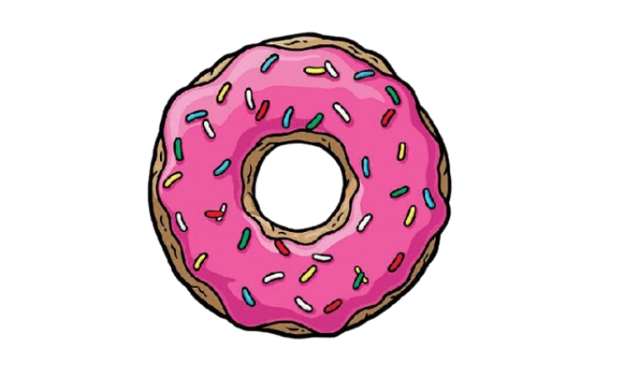

¡Bienvenido a Springfield!
Los Simpsons es la icónica serie animada que ha conquistado
corazones desde 1989. Creada por Matt Groening, esta comedia sigue las desventuras de la familia Simpson—Homer,
Marge, Bart, Lisa y Maggie—en la peculiar ciudad de Springfield. Con su humor irreverente, sátira social y
personajes inolvidables, la serie ha definido generaciones, ofreciendo risas, lecciones y momentos memorables
como las donas de Homer y las travesuras de Bart. ¡Explora este universo lleno de cerveza Duff, nubes
algodonadas y aventuras sin fin!

“¡Mmm... Donas!” - Homer Simpson
¿Por qué amamos Los Simpsons?
Desde la planta nuclear hasta la taberna de Moe, Springfield es un mundo vibrante lleno de historias. Ya sea
que te rías con las ocurrencias de Krusty el Payaso o te inspires con la inteligencia de Lisa, hay algo para
todos. ¡Únete a la diversión y descubre por qué Los Simpsons es más que una serie, es un fenómeno cultural!
Sobre Springfield
Springfield es la ciudad ficticia donde vive la familia Simpson. Es famosa por su peculiar comunidad, los
personajes únicos que la habitan, y los lugares icónicos como la Planta Nuclear, la Taberna de Moe, y la Escuela
Primaria de Springfield. La serie Los Simpsons ha retratado
la
vida cotidiana de esta ciudad con humor y sátira desde 1989.
Esta ciudad vibrante ha sido escenario de innumerables aventuras, desde las travesuras de Bart hasta las
lecciones
de Lisa. Springfield cuenta con una economía única, impulsada por la Planta Nuclear de Homero, y una rica
cultura
que incluye el Monorriel, el Kwik-E-Mart, y las famosas donas de Lard Lad. Además, eventos como el Día de los
Idiotas o el desfile de Acción de Gracias reflejan su espíritu caótico y divertido.
Aquí podrás explorar los personajes, episodios y lugares más importantes de Springfield, un lugar que ha
capturado
corazones con su humor irreverente y su crítica social.
"¡D'oh! ¡Esta ciudad es mi hogar!" - Homero Simpson